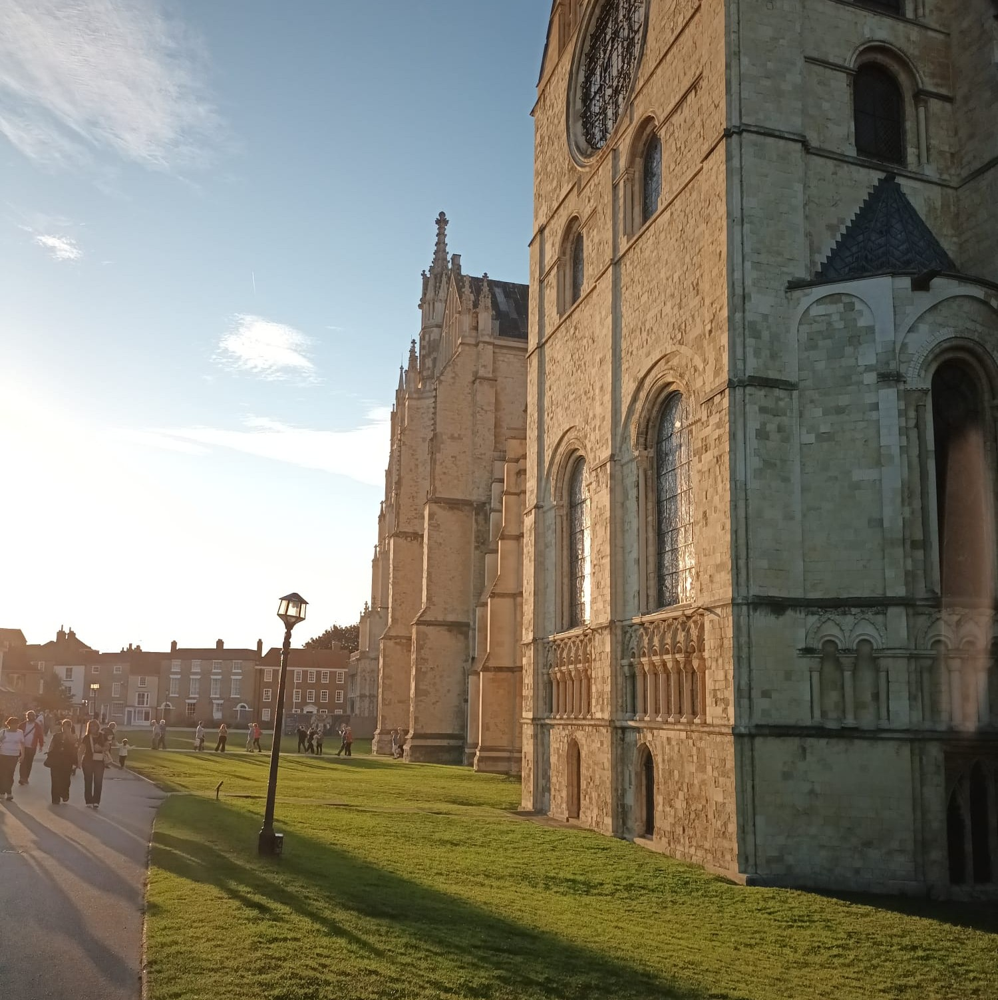

Johannes Werden
German exchange student at The Langton
Five facts about me:
- born 19th April 2009 in Aachen 👶🏼
- speaking German, English, Latin, Italian and Ancient Greek μέμφομαι
- playing several instruments in different ensembles 🎸 🎶
- won some history prices in Germany 🏺🏛️
- will spend five months at The Langton before returning to Germany 🦁🏫
My favourite...
- Music: a wide range from classical to metal 🎵🎧📻🎻
- Food: Kaiserschmarrn (an austrian pancake) 🥞🍳
- Color: red 🔴
- Film: Star Wars Episode III 🤖💫
- Book: Lindbergh: The Tale of a Flying Mouse 🐭🛩️

 Home
Home Projects
Projects Links
Links